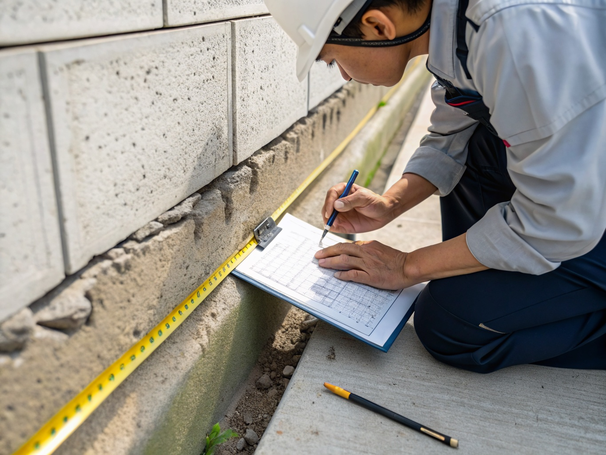

久米技建
KUME GIKEN Co., Ltd.
選ばれる理由
サービス
大規模修繕工事
防水工事
外壁塗装
シーリング工事
雨漏り調査・補修
建物診断
施工事例
施工の流れ
お客様の声
コラム
会社情報
会社概要
代表メッセージ
お問い合わせ
トップページ
選ばれる理由
サービス一覧
施工事例
施工の流れ
お客様の声
コラム
会社情報
お問い合わせ
電話で相談
無料見積もり
Works
施工事例
久米技建がこれまでに手がけた施工事例をご紹介します
ホーム
›
施工事例
すべて
防水工事
大規模修繕
外壁塗装
シーリング
雨漏り補修
防水工事
西宮市
マンション
屋上ウレタン防水改修工事
大規模修繕
大阪市
ビル
オフィスビル大規模修繕工事
外壁塗装
神戸市
マンション
分譲マンション外壁塗装工事
雨漏り補修
尼崎市
店舗
店舗天井雨漏り補修工事
シーリング
西宮市
ビル
商業ビル外壁シーリング打替え工事
防水工事
宝塚市
マンション
マンション屋上シート防水工事
大規模修繕
大阪市
マンション
分譲マンション第1回大規模修繕工事
外壁塗装
伊丹市
アパート
賃貸アパート外壁塗装工事

防水工事
芦屋市
戸建て
戸建て住宅バルコニーFRP防水工事
防水工事
吹田市
工場
工場屋上アスファルト防水改修工事
同じような建物でお困りですか？
まずは無料の建物診断から。お気軽にご相談ください。
無料相談・お見積もり
見積もりシミュレーション
電話で相談
無料見積もり